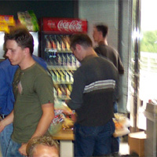

UT2003/Mod Summit
Epic invited mod developers from around the world to a UT2003 Mod Summit on June 22, 2002, in their offices in Raleigh, NC, USA.
Info Links
- [PolyCount] – Covering questions about modelling for UT2003.
- [Night's Edge: Wet Works] – General information.
- [PC-Gamers.net] – General information about the trip and the technicals.
The following threads don't contain much information of their own yet. (If that changes, move them up...)
Pictures
![[ut2003-modsummit-groupshot]](images/ut2003-modsummit-groupshot.jpeg) Listening to Tim Sweeney shortly before heading to the movie theater to watch Minority Report. |
Add your links here if you find pages with pictures of the mod summit.
Mychaeel: Damn... I should have made notes before going there so I could mention it in the discussion. Instead, I just sat and stared and was in total awe of that new Unreal engine... well, see /Suggestions instead. The image to the right is the best of myself I've found yet (the guy to the right busying himself with eating pizza while turning his back to the camera – the other one to the left is MClane from Team Vortex). I guess there must be at least one more of me sitting at Dr.Sin's computer, playing UT2003 over Epic's LAN. Tarquin: drool..... Mychaeel: Did I mention we all got free GeForce 4 (or equivalent) video cards at the end of the summit? Hugh: I've just been reading the Polycount thread about it.... I do agree that so much of it is SO nice... (working for UDN, I've had the new engine (not UT2003 specifically) for a few months, and I still get the shivers when looking round some demo levels - especially the Karma stuff!) Bean: The stuff looks great fellas. The karma stuff is especially cool. UsAaR33: I was invited but couldn't attend. It would have been nice to meet Dr. SiN in person. Oh well. there will be more mod summits.. right? EntropicLqd: you all look so young Mychaeel: What'd you expect? EntropicLqd: At least one person that looks like they are in their 30s. Mychaeel: I'm 25, if that helps. EntropicLqd: Hee hee – I used to have lots of fun when I was 25. To be fair though, it's not the age thats the killer, nor the wife. It's the children. Once the kid(s) arrive your life is over. When I was your age I used to spend all my time reading IT books and writing code. Now I change nappies for a living. Dma: I live in Charlotte, NC and that gives me the right to say that Raleigh, NC sucks. They take all of our tax money. Tarquin: I'm 27. I feel old. Great advert for fatherhood, Entropic Jb: Arggg that write up I did at PC-Gamers was probably my worst work ever. I had a much better one done but at that time the Chaos MB was down and that is where I had it. I have fixed using the info I wrote on the Chaos MB. Sorry, I will learn |

|

 - Now where's my zimmer?
- Now where's my zimmer?